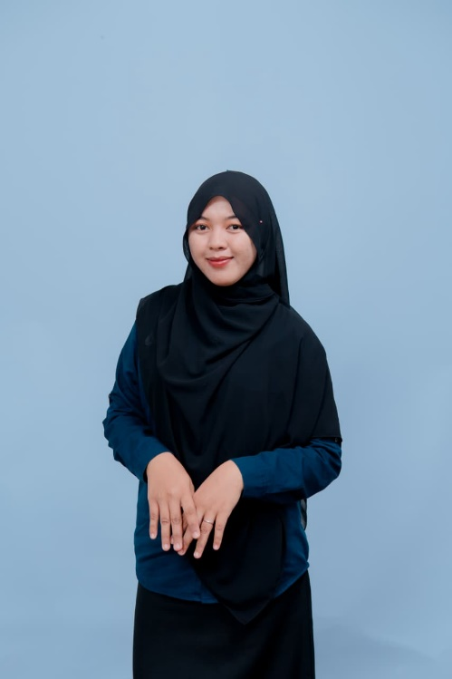
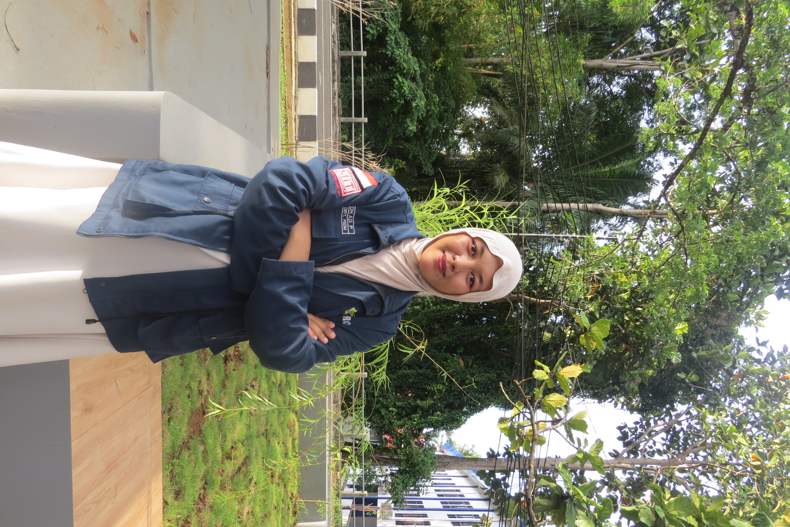

Teaching Assistant
Software Engineering Project Practicum - Universitas Bengkulu
Membimbing perancangan sistem, UML/DFD, dan implementasi aplikasi web.Informatics Engineering Student
Curious to learn. Driven to create. Ready to grow.
Saya adalah mahasiswa Teknik Informatika yang terus mengeksplorasi dunia teknologi, desain, dan kreativitas melalui berbagai proyek, organisasi, dan pengalaman baru.

Based in
Bengkulu, ID
Mahasiswi S1 Teknik Informatika Universitas Bengkulu dengan minat pada pengembangan web, desain grafis, dan konten digital.
Saya senang menerjemahkan persoalan menjadi solusi yang jelas, fungsional, dan memiliki karakter visual.


Eksplorasi di persimpangan desain, kode, dan narasi.
Klik project untuk melihat peran dan teknologi yang digunakan.
Belajar, memimpin, dan menciptakan dampak bersama.

Software Engineering Project Practicum - Universitas Bengkulu
Membimbing perancangan sistem, UML/DFD, dan implementasi aplikasi web.Engineering Research Community (ERCOM)
Memimpin program pelatihan, mentoring, dan pengembangan kapasitas mahasiswa.Novo Club Batch 4 - ParagonCorp
Mengembangkan konten kreatif, storytelling, dan kampanye digital.Multimedia Systems Project Practicum - Universitas Bengkulu
Memandu Adobe Family dan Figma untuk desain visual serta prototyping UI.Setiap proses adalah langkah yang layak dirayakan.
Fondasi yang terus saya kembangkan.
Pendidikan
Universitas Bengkulu


Leadership, Public Speaking, Public Relations, Teamwork, Time Management, dan Creative Problem Solving.
Tujuh pembelajaran untuk memperluas perspektif.
Dicoding Indonesia
Gemini AI

ERCOM Academy

Microsoft Office

Winter School

KPKK BEM KBM UNIB

ERCOM FT UNIB
Mari berkolaborasi